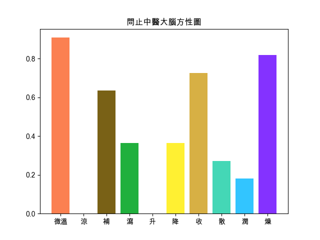

回上頁
【苓桂朮甘湯】
出處
金匱要略
功用
溫陽化飲，健脾利濕。
應用
痰飲病，胸脅支滿，頭眩心悸，短氣而咳，舌淡苔白膩，脈弦滑。
組成
● 茯苓 : 利水滲濕，健脾安神
● 桂枝 : 發汗解肌，溫經通脈，通陽化氣
● 白朮 : 補氣健脾，燥濕利水，固表止汗，安胎
● 炙甘草 : 補脾和胃，益氣複脈。
頭痛
偏頭痛
眼睛疲勞
頭重
水腫
眩暈
【組成方劑的單味藥藥性表】
-
溫熱藥
平藥
寒涼藥
補藥
桂枝☀ ,白朮☀
炙甘草☂
平藥
瀉藥
茯苓☀
-
升性藥
平藥
降性藥
散性藥
桂枝☀
平藥
收性藥
白朮☀ ,炙甘草☂
茯苓☀
